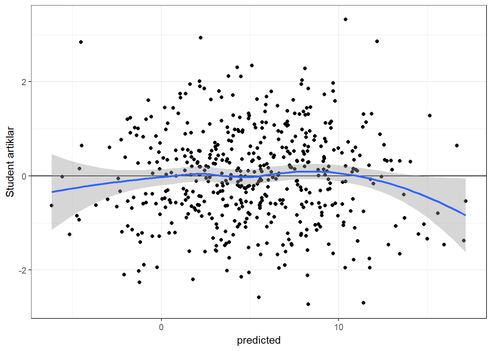

11 Çoklu Doğrusal Regresyon , Kısa Tanıtım
Bilimsel ilerleme bilginin güvenilir şekilde bir çalışmadan diğerine aktarılmasını gerektirir. Galileo’nun 350 sene önce dile getirdiği gibi bu aktarma keskinliği olan formal bir lisan ile yapılmalıdır. Pearl (2009)
Bu alıntıda yer alan formal lisanlardan biri matematiksel eşitliklerdir. Örneğin Galton 19. yüzyılda anne ve yavru bezelye tanelerinin büyüklüğü arasındaki ilişkiyi matematiksel eşitlikler ile açıklamaya çalışmıştır. Galton’un çalışmaları Pearson’ın çalışmalarına öncü olmuş ve ortaya regresyon fikri çıkmıştır.11.
Web of Science veri tabanında ,sadece 2016 yılı içerisinde, 60 binden fazla bilimsel makalenin özünde regresyon kelimesi yer almıştır. Alan yazın oldukça geniştir. Regresyon moellerinin bu kadar sık kullanılmasının sebebi , değişkenlerin arasındaki ilişkilerin sıradan bir korelasyon ile açıklanamayacak kadar karmaşık olmasıdır. Bir kitap bölümünde regresyonun bütün alt başlıkları ile ele alınması gerçekci değildir. Bu bölümde oldukça basit bir çoklu doğrusal regresyon modeli tanıtılmıştır.
11.1 Matrisler ve En Küçük Kareler Yöntemi
Regresyon modeli işlem basamaklarını matrisler ve en küçük kareler yöntemi (OLS) ile göstermenin iki avantajı vardır, (a) sürecin basamakları kolayca takip edilebilir ve (b) regresyon çözümlemesi konusunda daha üst düzey modelleri çalışmak isteyenler için sağlam bir temel oluşturabilir. Burdan sonraki bölümler iki farklı veri üzerinden devam edecektir. İlk veri seti sadece 12 katılımcıdan oluşur ve sentetik veri seti olarak isimlendirilmiştir. İkinci veri seti daha çok katılımcı içerir, gerçekci bir veri setini temsil edebilir ve simulasyon verisi olarak isimlendirilmiştir.
Araştırmacının bir bağımlı değişken (yordanan) ve iki farklı bağımsız değişken (yordayıcı) arasındaki ilişkiyi incelemek istediğini varsayalım. Bütün değişkenlerin sürekli değişken olduğunu düşünelim. Bu durumda regresyon modeli;
\[Y_i=\beta_0 + \beta_1X_{i1}+ \beta_2X_{i2}+ \epsilon_i\] i katılımcıları, i=1,…,n; Y bağımlı değişkeni; \(X_1\) ve \(X_2\) bağımsız değişkenleri; \(\beta\) regresyon katsayılarını ve \(\epsilon\) hata terimini temsil eder. Bu model matris eşitliği olarak da yazılabilir.
\[Y=X\beta+\epsilon\] Bu genel eşitlikte bütün bağımsız değişkenler X matrisi ile ve bütün regresyon katsayıları da \(\beta\) matrisi ile temsil edilir. Araştırmacının veri seti şu şekilde olsun
| id | Y | X1 | X2 |
|---|---|---|---|
| ind 1 | 8 | 0 | 3 |
| ind 2 | 4 | -2 | 1 |
| ind 3 | 6 | 6 | 3 |
| ind 4 | 6 | -2 | 0 |
| ind 5 | 5 | 5 | 0 |
| ind 6 | 9 | 4 | 2 |
| ind 7 | 7 | 3 | 3 |
| ind 8 | -6 | -4 | -5 |
| ind 9 | -8 | -4 | -6 |
| ind 10 | -1 | -3 | 0 |
| ind 11 | 0 | -2 | -2 |
| ind 12 | 5 | -1 | 1 |
Bu sentetik veri setinde sadece 12 katılımcı vardır. Araştırmacı bu veri setinden oluşturacağı 2 farklı matris ile, \(\beta\) tahmini olan \(\hat\beta\) matrisini hesaplayabilir.
\[Y=\begin{bmatrix} 8\\ 4\\ 6\\ 6\\ 5\\ 9\\ 7\\ -6\\ -8\\ -1\\ 0\\ 5 \end{bmatrix},X=\begin{bmatrix} 1 & 0 & 3\\ 1 & -2 & 1\\ 1 & 6 & 3\\ 1 & -3 & 0\\ 1 & 5 & 0\\ 1 & 4 & 2\\ 1 & 3 & 3\\ 1 & -4 & -5\\ 1 & -4 & -6\\ 1 & -3 & 0\\ 1 & -2 & -2\\ 1 & -1 & 1 \end{bmatrix}\]
OLS yöntemi ile \(\hat\beta\) kolayca hesaplanabilir
\[\begin{equation} \hat\beta=(X'X)^{-1}X'Y \tag{11.1} \end{equation}\]Bu hesaplamaları R ile yapalım;
Y=matrix(c(8,4,6,6,5,9,7,-6,-8,-1,0,5),ncol=1)
X=matrix(cbind(rep(1,12),
c(0,-2,6,-2,5,4,3,-4,-4,-3,-2,-1),
c(3,1,3,0,0,2,3,-5,-6,0,-2,1)),ncol=3)
solve(t(X)%*%X)%*%t(X)%*%Y
## [,1]
## [1,] 2.917
## [2,] 0.199
## [3,] 1.552Regresyon eşitliği; \[\hat Y_i=2.9167 + 0.1989X_{i1} + 1.5519X_{i2} \] \(\hat Y_i\) i. sıradaki birey için tahmin edilen değerdir. Eşitlik (11.1) hata kareleri toplamını minimize etmek üzere türetilmiştir: \(\sum_{i=1}^n(Y_i-\hat{Y_i})^2=Y'Y-\beta'X'X\beta\). Bu yöntem en iyi doğrusal yansız kestiricilerdir (Best Linear Unbiased Estimates).
Örnekte yer alan her iki bağımsız değişkeninde aritmetik ortalaması sıfırdır. \(X_1\) ve \(X_2\) sıfır iken, \((\hat{Y_i})\) 2.92 olarak hesaplanır. Bir diğer ifade ile, her iki bağımsız değişken için ortalamada bulunan bireylerin bağımlı değişken ölçümü 2.92 olarak tahmin edilmiştir. \(X_2\) değişkeni kontrol edildiğinde, \(X_1\) değişkeninde gerçekleşecek 1 birim artışın bağımlı değişken için 0.2 birim artışa yol açacağı tahmin edilmiştir. Benzer şekilde, \(X_1\) değişkeni kontrol edildiğinde, \(X_2\) değişkeninde gerçekleşecek 1 birim artışın bağımlı değişken için 1.55 birim artışa yol açacağı tahmin edilmiştir. Çoklu regresyon modellerinde “kontrol edildiğinde (ceteris paribus)” ifadesi gereklidir. Hesaplanan katsayılar, .20 ve 1.55, araştırmacıyı değişkenler arasındaki ilişki hakkında bilgilendirir. Tabi bu noktada araştırmacının “1 birim artış” ifadesinin tam olarak ne anlama geldiğini bilmesi gerekir.
11.1.1 A) “Esasen bütün modeller yanlıştır, fakat bir kısmı işe yarardır.”
Bu çıkarım Box and Draper (1987) tarafından yapılmıştır. Araştırmacı, araştırma sorusu doğrultusunda inşaa edeceği modelde yer alan değişkenleri nasıl seçtiğine yönelik ikna edici argümanlar sunmalıdır. Eğer önemli bir değişken modelin dışında bırakıldı ise kestirilen regresyon katsayıları muhtemelen geçersizdir.
Aşağıdaki durumu düşünelim
#sentetik veri setinde X2 göz ardı edilsin
X2omitted=matrix(cbind(rep(1,12),c(0,-2,6,-2,5,4,3,-4,-4,-3,-2,-1)),ncol=2)
solve(t(X2omitted)%*%X2omitted)%*%t(X2omitted)%*%Y
## [,1]
## [1,] 2.92
## [2,] 1.09Sentetik veri setinde \(X_1\) ve \(X_2\) arasındaki korelasyon 0.68, \(Y\) ve \(X_2\) arasındakş korelasyon ise 0.93’tür.Eğer araştırmacı \(X_2\) değişkenine modelde yer vermezse \(X_1\) için hesaplanan katsayı 1.09 olur. =.20 ile kıyaslandığında bu büyük bir değişikliktir. Bir diğer ifade ile, modelde yer alan bağımsız değişkenler ile ve bağımlı değişken ile ilişkili olduğu halde modelde yer verilmeyen bir değişken var ise hesaplanan regresyon katsayıları yanıltıcıdır.12
Dışarıda kalan değişken probleminin yanında bir regresyon modelinin geçerliği örneklem seçimine ve örnekleme çerçevesinin (sampling frame) model ile yansıtabilmesine de bağlıdır. Örneğin örnekleme çerçevesinde ağrılıklandırma kullanıldı ise çözümleme esnasında bu ağırlıklar göz ardı edilmemelidir.
11.1.2 B) Bağımlı değişken ve bağımsız değişkenler arasındaki ilişkinin kuvveti
Bağımlı değişkene ait kareler toplamı (total sum of squares) iki ana parçaya ayrıştıtılabilir, modele ait kareler toplamı ve hataya ait kareler toplamı. Modele ait kareler toplamının değişkene ait kareler toplamına oranı \(R^2\) ile gösterilir ve çoklu belirlilik katsayısı olarak adlandırılır. \(R^2\) bağımlı değişken ve bağımsız değişkenler arasındaki ilişkinin kuvvetini ölçer.
# KT total
n=length(Y)
TotalSS=t(Y)%*%Y-(n*mean(Y)^2)
# KT Model
betahat=solve(t(X)%*%X)%*%t(X)%*%Y
ModelSS=t(betahat)%*%t(X)%*%Y-(n*mean(Y)^2)
ModelSS/TotalSS
## [,1]
## [1,] 0.879Fakat \(R^2\) evren parametresi için yanlı bir kestiricidir.Daha yansız bir kestirici ise düzeltilmiş belirlilik katsayısıdır, \(R^2_{Adj}\);
Rsquared=ModelSS/TotalSS
#sörneklem
n=12
#bağımsız değişken sayısı
p=2
# sabit (intercept) varsa 1, yoksa 0
int_inc=1
AdjustedRsquared=1-(1-Rsquared)*((n-int_inc)/(n-int_inc-p))
AdjustedRsquared
## [,1]
## [1,] 0.852\(R^2\) ve \(R^2_{Adj}\) kullanışlı katsayılardır ve ne kadar varyansın model ile açıklandığını belirtir. Örneğimiz için \(R^2 = .879\) ve \(R^2_{Adj}= .852\) birbirine yakın değerlerdir.Eğer \(R^2 = .25\) olsa idi \(R^2_{Adj}\) 0.08 olurdu. \(R^2\) 1 ise model varyansın tamamını açıklamıştır (%100). \(R^2\) ve \(R^2_{Adj}\) aynı bağımlı değişkeni açıklayan farklı bağımsız değişken gruplarını karsşılaştırmak için de kullanılır. \(R^2\)’in yorumu korelasyon katsayısı yorumunda olduğu gibi konu alanına göre değişir. 0.7 \(R^2\) değerinin çok güçlü veya çok zayıf adledilebileceği durumlar olabilir.
11.1.3 C) Artıklar ve etkili gözlemler
Artıklar modelin uyumsuzluğu hakkında bilgi verebilir. Artıkların incelenmesi ile yordayıcı ve yordanan değişklenlerin arasındaki ilişkinin doğrusallığı görsel olarak kontrol edilebilir. Artıkların dağılımsal özelliklerini incelemek örneklemden evrene yorum yapmak için gerekli olabilir. Örneğin istatistiksel anlamlılık testlerinde ve güven aralığı hesaplamaları normal dağılım varsayımına dayandırılmış ise artıkların standart normal dağılım olasılığı grafiğinde (QQ grafiği) düz bir çizgiyi takip etmesi gerekir.
#tahmin edilen değerler
Yhat=X%*%betahat
residuals=Y-Yhat
residuals
## [,1]
## [1,] 0.4276
## [2,] -0.0708
## [3,] -2.7658
## [4,] 3.4811
## [5,] 1.0888
## [6,] 2.1839
## [7,] -1.1691
## [8,] -0.3615
## [9,] -0.8096
## [10,] -3.3199
## [11,] 0.5850
## [12,] 0.7303
qqnorm(residuals)
Genellikle artıklar üç farklı yaklaşımdan biri ile incelenir;
• Ham artıklar, \(Y_i-\hat{Y_i}\). Ham artıklar Y ile aynı skaladadır.
• Standardize artıklar:Stanardize artıklar ham artıkların kkendi standart sapmlarına böünmesi ile hesaplanır. z puanı skalasındadırlar (ortalama=0, standart sapma=1). Normal dağılım varsayımı yapıldığında, aykırı değerlerin gözden geçirilmek üzere seçilmesi aşamasında mutlak standardize artıklar için kriter olarak 2 kullanılabilir. Bir diğer ifade ile, mutlak ğeri 2 den büyük olan standardize artıklar aykırı değer tespitinde incelenmelidir. Bununla birlikte bir z dağılımında değerlerin %5’inin +/-2 kriterinin dışında yer alır.
• Student artıklar: Ham artıkların tahmin edilen standart hataya bölünmesi ile hesaplanır.
Artıklar incelenirken bu üç yaklaşımda genellikle aynı sonucu verir. Rawlings, Pantula, and Dickey (1998) aykırı değerlerin tespitinde student artıkların ve \(t_{n-p'-1}\) serbestlik derecesi ile bir t dağılımının kullanımını tavsiye eder. Buradaki \(p'\) modelde yer alan katsayıları temsil eder (örneğimiz için sabit+iki yordayıcı =3)
Artık değerleri tahmin edilen değerler ile karşılaştıran saçılım grafikleri doğrusallık hakkında fikir verebilir. Aşağıda 500 katılımcı ve 2 yordayıcı değişken için simüle edilmiş veri üzerine kurulmuş bir regresyon modelinden elde edilen artık değer-tahmin edilen değer saçılım grafiği verilmiştir. Doğrusallık ihlal edilmediğinden grafik üzerinde bir örüntü olmamalıdır.
#veri oluştur
library(mvtnorm)
sigma <- matrix(c(4,2,2,3), ncol=2)
xx <- rmvnorm(n=500, mean=c(0,0), sigma=sigma)
yy=5+xx[,1]*2+xx[,2]*-3+rnorm(500,0,1.5)
model=lm(yy~xx[,1]+xx[,2])
errors=rstudent(model)
predicted=predict(model)
library(ggplot2)
plotdata=data.frame(errors,predicted)
ggplot(plotdata, aes(x = predicted, y = errors)) +
geom_point() + geom_hline(yintercept=0)+ ylab("Student artıklar")+
theme_bw()+stat_smooth()
Grafikte yer alan mavi çizginin 0 çizgisine benzer olması doğrusallık ihlalinin olmadığını gösterir.
Gösterim amaçlı simule edilen bir diğer veri setinde Y ve \(X_2\) arasındaki ilişki doğrusal değildir quadratiktir.
#veri oluştur
library(mvtnorm)
sigma <- matrix(c(4,2,2,3), ncol=2)
xx <- rmvnorm(n=100, mean=c(10,10), sigma=sigma)
yy=150+(xx[,1]*4)+(xx[,2]*-3)+(xx[,2]^2*1.2)+rnorm(100,0,3)
model=lm(yy~xx[,1]+xx[,2])
errors=rstudent(model)
predicted=predict(model)
library(ggplot2)
plotdata=data.frame(errors,predicted)
ggplot(plotdata, aes(x = predicted, y = errors)) +
geom_point() + geom_hline(yintercept=0)+ylab("Student artıklar")+
theme_bw()+stat_smooth()
Bu grafik ilişkinin doğrusal olmadığını gösterse dahi sorunun kaynağını bulmada yardımcı değildir. Araştırmacı artık değerleri yordayıcılar ile karşılaştırarak sorunun kaynağını bulabilir. Bu konuya tekrar değinilecektir.
Artık değer grafikleri herhangi bir sorun belirtmese dahi sıradan olmayan artık değerler dikkatlice incelenmelidir. Bir artık değerin sıradışı ( örneğin ortalamadan 3,4 veya 5 standart sapma farklı oluşu) olup olmadığına araştırmacı karar verir. Fakat bir gözlemin veri setinden çıkarılması iaraştırmacı tarafından detaylı olarak rapor edilmeli ve gerekçelendirilimelidir.
#veri oluştur
set.seed(04022017)
library(mvtnorm)
sigma <- matrix(c(4,2,2,3), ncol=2)
xx <- rmvnorm(n=100, mean=c(10,10), sigma=sigma)
yy=(xx[,1]*4)+(xx[,2]*-3)+rnorm(100,0,3)
tempdata=data.frame(yy,xx,id=1:100)
model=lm(yy~X1+X2,data=tempdata)
tempdata$SUTresiduals=rstudent(model)
# kaç tane artık değer kritik değerin üstünde
# alfa=.05
sum(abs(tempdata$SUTresiduals)>qt(c(.975), df=100-3-1))
## [1] 8
#hangi gözlemler?
tempdata[which(abs(tempdata$SUTresiduals)>qt(c(.975), df=100-3-1)),]
## yy X1 X2 id SUTresiduals
## 13 21.39 11.49 10.29 13 2.02
## 32 8.85 11.96 10.65 32 -2.20
## 43 15.80 11.14 7.56 43 -1.99
## 50 9.21 8.00 10.21 50 2.53
## 51 19.96 10.11 8.97 51 2.02
## 68 25.33 10.96 8.33 68 2.04
## 84 2.03 7.94 7.84 84 -2.03
## 91 5.51 10.74 10.25 91 -2.10Tip I hata oranı 0.05 ile \(t_{.975,96}\) kritik değerini kullanırsak yaklaşık olarak \(n * .05\) gözleme ait mutlak student ayrık değerin kritik değerden büyük olması beklenir. Son örneğimizde 100 katılımcı olduğu için bu sayı 100*0.05=5’tir, tespit edilen potansiyel aykırı değer sayısı ise 8’dir. Fakat aykırı olma ihtimali olan gözlemler incelendiğinde bir anormallik görülmemiştir. Burada kullanılan \(t_{.975,96}\) ihtiyatli bir kritik değerdir,\(t_{.99,96}\) değeri de kullanılabilir. Bu yöntemin amacı potansiyel aykırı değerleri tespit edip incelemektir. Veri setine aşina olan araştırmacı hangi gözlemlerin sıradışı olduğunu söyleyebilir.
Araştırmacı sıradışılık farkeder ve gözlemleri veri setinden çıkarmaya karar verirse bunu birer bire yapmalıdır. Belirlenen en sıradışı gözlem çıkarılıp analizler tekrarlanmalıdır. Eğer gözlem veri setinden çıkarılacaksa sebepleri detaylı bir şekilde açıklanmalıdır. Bununla beraber, aykırı değerlere dirençli yöntemlerde kullanılabilir. Güçlü bir gerekçesi olmadığı sürece gözlemlerin veri setinden çıkarılması doğru değildir.
R programlama dili ile etkili gözlemleri tespit etmekte oldukça kolaydır.Etkili gözlem, veri setinden çıkarıldığında sonuçları değiştirebilecek gözlem olarak tanımlanabilir . influence.measures fonksiyonu 5 farklı ölçüm hesaplar;
summary(influence.measures(model))
## Potentially influential observations of
## lm(formula = yy ~ X1 + X2, data = tempdata) :
##
## dfb.1_ dfb.X1 dfb.X2 dffit cov.r cook.d hat
## 12 0.08 -0.02 -0.08 -0.10 1.12_* 0.00 0.08
## 33 0.09 -0.03 -0.07 -0.11 1.11_* 0.00 0.07
## 41 -0.01 -0.03 0.03 -0.04 1.10_* 0.00 0.06
## 42 0.05 -0.12 0.07 0.13 1.11_* 0.01 0.07
## 50 0.20 -0.40 0.21 0.47 0.88_* 0.07 0.03
## 64 -0.03 0.03 0.00 0.04 1.10_* 0.00 0.06
## 100 0.01 0.13 -0.15 -0.18 1.10_* 0.01 0.07Bu örnekte 12,33,41,42,50,64 ve 100 numaralı gözlemlerin etkili olma potansiyeli vardır. Tabloda görüldüğü gibi bu gözlemlerin hangi kritere göre seçildiği (*) işareti ile gösterilmiştir. Örneğimizde 7 gözlem de kovaryans oranı kriterine göre etkin bulunmuştur. Bu katsayı, gözlemlerin, regresyon katsayılarına ait örneklem varyansına etkisini ölçmeye çalışır. \(1+(3p'/n)\) ve \(1-(3p'/n)\) sınırları dışında kalan kovaryans oranı katsayısına sahip gözlemler influence.measures fonksiyonu tarafından işaretlenir. Örneğimizde n=100 ve p’=3 olduğundan kritik değerler 1.09 and .91 olarak hesaplanır.
Dfb (DFBETAS) değeri, gözlem çıkarıldığında regresyon katsayılarının ne kadar değişeceği hakkında bilgi vermeye çalışır. Gözlem çıkarıldıktan sonra hesaplanan yeni katsayı ile eski katsayı arasındaki farki yeni katsayının standart hatasına böler. Yani bir t istatistiğidir. Hesaplanan değer \(2/\sqrt(n)\) kritik değerinden büyük ise influence.measures fonksiyonu gözlemi işaretler. Örneğimizde kritik değer \(2/\sqrt(100)=.2\)
dffit, gözlem veri setinden çıkarıldığında o gözlem için yeni tahminin ne ölçüde değişeceği hakkında bilgi vermeye çalışır. \(2*\sqrt{\frac{p'}{n}}\) kritik değerinden büyük olan mutlak dffit değerleri influence.measures fonksiyonu tarafından işaretlenir.
Cook uzaklğı (cook.d) bir gözlemin bütün regresyon katsayıları üzerindeki etkisini aynı anda ölçmeye çalışır. \(F_{.5,p',n-p'}\) kritik değerinden büyük olan değerler influence.measures fonksiyonu tarafından işaretlenir. Cook uzaklığı aynı zamanda belli bir gözlemin veri setinden çıkarılması durumunda geri kalan tahmini değerlerin (\(\hat{Y_i}\)) ne kadar etkilendiğini ölçmeye çalışır.
Leverage değeri (Hat Diag) bir gözlemin diğer gözlemlerden ne kadar uzak olduğunu ölçmeye çalışır. \(2p’/n\) kritik değerinden büyük olan leverage değerleri potansiyel etkili gözlemdir ve influence.measures fonksiyonu tarafından işaretlenir.
Potansiyel etkili gözlem olarak işaretlenen gözlemlerin değerlendirilmesi araştırmacının sorumluluğundadır. Daha önce belirtildiği gibi, etkili bir gözlemin veri setinden çıkarılıp çıkarılmaması önemli bir karardır. Veri setinden çıkarılan bir gözlem varsa sebepleri detaylı olarak açıklanmalıdır.
11.1.4 D) Eş varyanslılık varsayımı
Bağımlı değişkenin normal dağıldığı varsayımı ve OLS yöntemi ile regresyon katsayılarının \(\beta\) dağılımları hesaplanabilir. Bu sayede regresyon katsayıları için standart hatalar \(\hat\sigma^2(X′X)^{-1}\) ile kestirilebilir. Bu eşitlikteki \(\hat\sigma^2\) hata terimlerinin varyansıdır.
#artıklar
s2 <- (t(residuals) %*% residuals)/(nrow(Y)-nrow(betahat))
Var_betahat <- s2[1,1]*solve(t(X)%*%X) \(\sigma^2 (X'X)^{-1}\) eşitliği homojen varyans varsayımı altında geçerlidir. Bu varsayım, bağımsız değişkenler kontrol edildiğinde bağımlı değişkenin eş varyanslılık göstermesi durumudur. Bir diğer deyişle, bağımlı değişken için yapılmış her bir gözlem aynı miktarda bilgi sağladığı varsayılır (Rawlings, Pantula, and Dickey (1998)). Bu varsayım ile birlikte regresyon katsayıları \(\sum_{i=1}^n(Y_i-\hat{Y_i})^2\) toplamını minimize etmek üzere kestirilir. Bu eşitlikte her bir artık değer eşit bir ağırlığa sahiptir. Eğer eş varyanslılık varsayımı ihlal ediliyorsa artık değerlere farklı ağırlık vererek kestirici modifiye edilebilir veya başka bir dirençli kestirici kullanılabilir. Başka bir alternatif olarak bağımlı değişkenin transformasyonu kullanılabilir veya standart hataların tahmin yöntemi değiştirilebilir (bakınız Lumley and Zeileis (2015)). Aksi takdirde \(\hat\beta\) için standart hatalar, eş varyanslılığın nasıl ihmal edildiğine evren parametresine kıyasla gerekenden büyük veya küçük hesaplanabilir. Eğer küçük hesaplanırsa Tip I hata oranı alfadan daha büyük olabilir. Eğer büyük hesaplanırsa istatistiksel güç yitirilir. Eş varyanslılık hipotezi, artık değerler ile tahmin edilen değerlerin kıyaslandığı bir grafik üzerinden incelenebilir. Eş varyanslılığın zedelendiği bir durum;
#veri oluştur
set.seed(03032017)
library(mvtnorm)
sigma <- matrix(c(1,.7,.7,1), ncol=2)
xx <- rmvnorm(n=100, mean=c(1,1), sigma=sigma)
#heteroscedasticity ekle
hts=function(v1,v2){2+.5*v1+.5*v2}
yy=5+xx[,1]*5+xx[,2]*5+rnorm(100,0,hts(xx[,1],xx[,2]))
model=lm(yy~xx[,1]+xx[,2])
#summary(model)
errors=rstudent(model)
predicted=predict(model)
#student artıklar ve tahmin edilen Y
library(ggplot2)
plotdata=data.frame(errors,predicted)
ggplot(plotdata, aes(x = predicted, y = errors)) +
geom_point() + geom_hline(yintercept=0)+ylab("Student artık değerler")+
geom_segment(mapping=aes(xend = predicted, yend = 0)) +
theme_bw()
Genel olarak \(\hat Y\) değerleri küçük ise hata varyansı da küçük görülmektedir. Eş varyanslılığın sağlandığı bir durum;

11.1.5 E) Hipotez testi
\(H_0: \beta_1=...=\beta_p=0\) boş hipotezi F dağılımı takip bir istatistik ile test edilebilir. Bu boş hipotez bütün regresyon katsayılarının sıfıra eşit olduğunu öne sürer. Alternatif hipotez ise en az bir regresyon katsayısının sıfırdan farklı olduğunu ileri sürer. \(MS_{regression}/MS_{residual}\) istatistiği \(p\) ve \(n-p'\) serbestlik derecesine sahip bir F dağılımı takip eder. \(p\) bağımsız değişken sayısını \(p'\) ise regresyon katsayıları sayısını temsil eder (sabit yoksa \(p=p'\)). Alfa=0.05 ve sentetik data için;
# Model KT ve Total KT daha önceden hesaplanmıştır.
dfREG=2 #(p=2, bağımsız değişkenler X1 and X2)
dfRES=9 #(n-p', 12-3)
MSreg=ModelSS/dfREG
MSres=(TotalSS-ModelSS)/dfRES
MSreg/MSres
## [,1]
## [1,] 32.8
#kritik F
qf(.95,dfREG,dfRES)
## [1] 4.26
1-pf(MSreg/MSres,dfREG,dfRES)
## [,1]
## [1,] 7.39e-05t-testi ise \(H_0:\beta_{X}=\beta_{hyp}\) boş hipotezi ve \(H_1:\beta_{X}\neq\beta_{hyp}\) alternatif hipotezini test etmek için kullanılabilir. Genellikle \(\beta_{hyp}=0\) kullanılır.
\((b_X-\beta_{hyp})/SE(b_X)\) istatistiği N-p’ serbest dağılımına sahip bir t dağılımı takip eder.
# X2 regresyon katsayısı 0'dan farklı mı
Bhyp=0 #boş hipotez değeri
# betahat daha önceden hesaplanmıştır
# X2 için hesaplanan katsayı
bx2=betahat[3]
# Var_betahat daha önce hesaplanmıştır
# X2 regresyon katsayısına ait standart hata
se_bx2=sqrt(Var_betahat[3,3])
#t istatistiği
(bx2-Bhyp)/se_bx2
## [1] 5.33
# t kritik değeri
qt(.975,9)
## [1] 2.26
#p değeri
2*(pt(-abs((bx2-Bhyp)/se_bx2),9))
## [1] 0.00047811.1.6 F) Değişken seçimi
Uzak bir bakışaçısından, çoklu regresyonun kullanıldığı iki senaryo vardır.
İlk senaryo: Sosyal bilimci alan yazını dikkatli bir şekilde inceler, araştırma sorusu ile ilgili olan bağımsız değişkenleri belirler, gereken örneklem büyüklüğüne karar verir, veriyi toplar,bütün bağımsız değişkenleri içeren bir model kurar ve sonuçları raporlar
İkinci senaryo: Sosyal bilimcinin oldukça büyük bir veri setine erişimi vardır ve hangi bağımsız değişkenlerin modelde yer alacağına dair önceden bir kararı yoktur. Bu durum, (a) araştırmacının yeni bir teori üzerinde çalıştığı ve bir çok değişkeni ölçtüğü durumlarda durumlarda veya (b) daha önceden toplanmış bir veri seti üzerinde (secondary data) çalıştığı durumlarda görülebilir. Her iki durumda da araştırmacı en iyi tahmin kabiliyeti gösteren değişkenleri seçmek isteyebilir. Bu seçim işlemi için farklı yaklaşımlar mevcuttur, örneğin adım adım seçim (stepwise), eleme ile seçim (backward) veya ekleme ile seçim (forward). Fakat bizim tecrübemize göre tamamen aynı veri setine uygulandığında bile bu yöntemler farklı sonuçlar vermektedir.
R ile oldukça kolay tamamlanabilecek bir diğer değişken seçme yöntemi mümkün olan bütün regresyonları koşmaktır. Tanıtım amacı ile yazılan R kodunu inceleyiniz;
#veri oluştur
set.seed(02082017)
library(mvtnorm)
sigma=matrix(c(5.899559,4.277045,3.906341,
4.277045,5.817412,3.654419,
3.906341,3.654419,5.642258),ncol=3)
xx <- rmvnorm(n=200, mean=c(0,0,0), sigma=sigma)
yy=5+xx[,1]+xx[,2]*1.5+xx[,3]*2+rnorm(200,0,3)
simdata=data.frame(yy,xx,id=1:200)
library(leaps)
formula <- formula(paste("yy ~ ",
paste(names(simdata[2:4]), collapse=" + ")))
allpossreg <- regsubsets(formula,nbest=3,data=simdata)
aprout <- summary(allpossreg)
# str(aprout) u inceleyiniz
# bu fonksiyon R2 ve Düzeltilmiş R2 den başka kriterler de hesaplar
APRtable=with(aprout,round(cbind(which,rsq,adjr2),3))
APRtable=data.frame(APRtable,check.rows = F,row.names = NULL)
APRtable$ppri=rowSums(APRtable[,1:4])
kable(APRtable)| X.Intercept. | X1 | X2 | X3 | rsq | adjr2 | ppri |
|---|---|---|---|---|---|---|
| 1 | 0 | 1 | 0 | 0.753 | 0.751 | 2 |
| 1 | 0 | 0 | 1 | 0.696 | 0.695 | 2 |
| 1 | 1 | 0 | 0 | 0.630 | 0.629 | 2 |
| 1 | 0 | 1 | 1 | 0.871 | 0.870 | 3 |
| 1 | 1 | 0 | 1 | 0.811 | 0.809 | 3 |
| 1 | 1 | 1 | 0 | 0.808 | 0.806 | 3 |
| 1 | 1 | 1 | 1 | 0.890 | 0.888 | 4 |
Bu tabloya göre sabitin ve sadece \(X_2\) değişkeninin olduğu model \(R^2=.753\) sonucunu vermektedir. Bütün değişkenler eklendiğinde \(R^2=.890\) olur, fakat \(X_1\) in modelde yer almaması \(R^2\) değerini sadece .019 düşürür. Grafiği inceleyiniz
require(ggplot2)
ggplot(APRtable, aes(x=ppri-1, y=rsq)) +
geom_point(shape=1,size=3)+
scale_y_continuous(breaks = seq(0.5, 1, by = 0.05)) +
scale_x_continuous(breaks = seq(0, 3, by = 1))+
theme_bw()+labs(x = "R-squared")+
theme(axis.text=element_text(size=15),
axis.title=element_text(size=14,face="bold"))
ggplot(APRtable, aes(x=ppri-1, y=adjr2)) +
geom_point(shape=1,size=3)+
scale_y_continuous(breaks = seq(0.5, 1, by = 0.05)) +
scale_x_continuous(breaks = seq(0, 3, by = 1))+
theme_bw()+labs(x = "Adjusted R-squared")+
theme(axis.text=element_text(size=15),
axis.title=element_text(size=14,face="bold"))

Figure 11.1: Mümkün olan bütün regresyonlar
11.1.7 G) Güçlü doğrusal bağlantı sorunu
Bağımsız değişkenlerin birbiri ile çok güçlü olarak ilişkili olması tahmin sürecinde istenmeyen sonuçlara yol açabilir. Bu durum doğrusal bağlantı (collinearity) sorunu olarak bilinir. Standart hatalar doğrusal bağlantı arttıkça artar çünkü bu sorun her bir bağımsız değişkenin tahmin sürecine olacak olumlu katkısını saklar.
Açıklama amacı ile iki bağımsız değişkeninin olduğunu düşünelim, bu değişkenler arasındaki korelasyonun yüksek olduğu durumda iki tür problem oluşabilir, (a) regresyon katsayıları istikrarsız olabilir, aynı evrenden çekilen örneklemler ile çok farklı katsayılar elde edilebilir, (b) istatistiksel olarak anlamlı bir \(R^2\) bulunsa dahi katsayılar istatistiksel olarak sıfırdan farksız olabilir.
Varyans şişkinliği faktörü (Variance inflation factor,VIF) çoklu doğrusallık tespitinde kullanılabilir,\(VIF_x=\frac{1}{1-R^2_X}\) . Bu eşitlikte \(R^2_X\) X değişkeni çıkarıldığında hesaplanan \(R^2\) değeridir. Büyük VIF değerleri potansiyel doğrusallık problemini işaret eder.Telaffuz edilen kritik VIF değerleri 4 ve 10 dur, fakat VIF değerleri dolaylı da olsa örneklem büyüklüğüne ve değişken varyansına göre değişebilir (Obrien (2007)). VIF değerleri büyük ise araştırmacı problemin kaynağını incelemedir. Araştırmacı şu seçeneklerden bir tanesini savunmaya çalışabilir, (a) yüksek korelasyona sahip iki değişkenden birini modelin dışında tutma, (b) yüksek korelasyon gösteren iki değişkeni birleştirme. Karar dikkatli bir şekilde verilmeli ve yeni sonuçlar ile eki sonuçlar kıyaslanmalıdır.
#korelasyonları kontrol et.
cor(simdata[,2:4])
## X1 X2 X3
## X1 1.00 0.730 0.640
## X2 0.73 1.000 0.666
## X3 0.64 0.666 1.000
#en yüksek korelasyon .73,
#çoklu doğrusallık problemi beklenmez
library(car)
vif(lm(yy~X1+X2+X3,data=simdata))
## X1 X2 X3
## 2.36 2.50 1.98
# VIF değerleri düşük11.1.8 H) Doğrusal olmayan regresyon
Eğer bağımlı değişken bağımsız değişkenlerden biri ile lineer olmayan bir ilişkiye sahip ise, bu durumun görmezden gelinmesi önemli bir değişkenin dışarda bırakılması problemi ile aynıdır. Artık değerlerin incelenmesi lineer olmayan ilişkilerin tespitinde işe yarardır. Kullanılan yöntemlerden biri, bağımsız değişkenin üs kuvvetleri ile oluşturulacak yeni bir değişkenin modele eklenmesidir. Örneğin artık grafiği \(X_k\) ve artıklar arasında karesel (quadratic) bir ilişki varsa \(X_k^2\) modele alınarak artık model uyumu tekrar incelenebilir. Bir diğer alternatif bağımsız değişkenin transform edilmesidir.
11.1.9 I) Korelasyon gösteren veya bağımsız olmayan hata terimleri
Hatalar birbiri ile korelasyonlu olmamlıdır, daha kapsayıcı bir ifade ile, hatalar bağımsız olmalıdır. Bağlı olma durumu var ise bu durum göz ardı edilirse regresyon sonuçları geçersizdir. Fakat bu konu bu tanıtım materyalinin kapsamı dışında kalır. Sosyal bilimlerde tekrarlı ölçümler kullanıldığında (boylamsal çalışma) korelasyon gösteren hata terimleri oluşabilir, bu durumda araştırmacılar Örtük gelişim modelleri (latent growth models) veya çok düzeyli modeller (multilevel models) kullanabilir. Eğer hataların bağlı olma durumu bireylerin aynı kümelerden gelişi ise (nested or clustered data) yine çok düzeyli modeller kullanılabilir.
11.1.10 J) Bağımsız değişken üzerine işlemler (Centering and Scaling)
Annenin doğum esnasındaki yaşının çocuğun 10 yaşındaki IQ puanını tahmin etmeye çalışan bir çalışma düşünelim. Bu durumda regresyon sabiti anne yaşının 0 olduğu durumda çocuğun IQ puanını gösterir. Bu anlamlı olarak yorumlanabilir bir katsayı değildir. Eğer anne yaşı ortalama etrafında merkezileştirilirse, bir diğer ifade ile, her annenin yaşından örneklemdeki annelerin ortalama yaşı çıkarılırsa, regresyon sabiti yorumlanabilir. Bu durumda yaş değişkeninde sıfır, yaş ortalamasını temsil eder ve regresyon sabiti de ortalama yaştaki bir annenin çocuğunun 10 yaşındaki tahmini IQ puanını verir. Benzer bir örnek olarak, işe devamsızlık değişkeninin iş stresi değişkeni ile açıklanmaya çalışıldığını düşünelim. İş stresi puanları 10 ila 50 arasında değişiyorsa regresyon sabitinin anlamlı bir yorumu olmaz. Araştırmacı iş stresi puanları ortalama etrafında merkezileştirmeyi veya seçtiği bir değeri (örneğin 40) stres puanlarından çıkararak sabitin anlamlı bir şekilde yorumlanmasını sağlayabilir. Başka bir örnekte gelir değişkeninin sağlık değişkeni üzerine etkisi araştırılsın. Gelir verisinde bir birimın 1 dolar olduğunu ve bu değişkene ait regresyon katsayısının .001 olduğunu düşünelim. Araştırmacı bu durumda gelir değişkenini 1000’e bölerek birimi 1 dolardan 1000 dolara çıkarabilir. Bu durumda regresyon katsayıso .001 değil 1 olacaktır. Bu durum araştırmacının yorum yapmasını kolaylaştırabilir.
11.1.11 K) Standardize edilmiş katsayılar
Yukarıda bahsedilen lineer transformasyonun yanında z transformasyonu da yapılabilir. Her sürekli bağımsız değişken için, değerlerden ortalama çıkarılıp standart sapmaya bölünebilir. Değişkenin doğasına bağlı olmak kaydı ile, standardize edilmiş bir değişkenin yorumu daha anlamlı olabilir; Ham puanlar için yorum: Endişe puanlarındaki bir birim artışın akademik başarı değişkeninde 3 birim azalmaya yol açabileceği tahmin edilmiştir. z-puanları: Motivasyon değişkeninde gerçekleşecek bir standart sapma artışın, başarı değişkeninde 0.25 standart sapma artışla ilişkili olabileceği tahmin edilmiştir.
11.1.12 L) Etkileşimler (Interactions)
ANOVA bölümünde etkileşim konusu kısaca ele alınmıştı. Değişkenler arası etkileşimin modelde yer alması gerekirken göz ardı edilmesi önemli bir değişkenin dışarıda bırakılması problemidir. Ayrıca iki değişken arasındaki etkileşimin sonuçları etkilemesi durumunda asıl etkilerin yorumlanması yanıltıcı olabilir. Örneğin bir araştırmacının, öğrencilerinin merkezi bir sınavda matematik başarısını (\(Y\)) tahmin etmeye çalışsın. Ödevlerden alınan puanlar (\(X_1\)) ve öğretmen yapımı sınavlardan alınan puanların (\(X_2\)) başarı üzerinde etkili olup olmadığını incelesin. Kuracağı eşitlik \(Y_i=\beta_0+\beta_1X_{i1}+\beta_2X_{i2}+\epsilon_i\) olursa araştırmacı \(Y\) ve \(X_1\) arasındaki ilişkinin \(X_2\)’ye bağlı olmadığını varsayar. Eğer bu varsayım hatalı ise sonuçlar yanıltıcı olabilir. Etkileşimin varlığını kontrol etmek için
\[\begin{equation} Y_i=\beta_0+\beta_1 X_{i1}+\beta_2 X_{i2}+\beta_3 X_{i1} X_{i2}+ \epsilon_i \tag{11.2} \end{equation}\]modeli test edilebilir. Burada \(Y\) ve \(X_1\) arasındaki ilişki \(\beta_1+\beta_2 X_{i2}\) ile gösterilir, bu \(Y\) ve \(X_1\) arasındaki ilişkinin \(X_2\)’ye bağlı olduğunu gösterir. Benzer şekilde \(Y\) ve \(X_2\) ilişkisi \(\beta_2+\beta_1 X_{i1}\) ile gösterilir. \(\beta_1+\beta_2 X_{i2}\) düşünüldüğünde \(\beta_1\), \(Y\) ve \(X_1\) arasındaki ilişkinin \(X_2 = 0\) iken ne olduğunu belirtir. Eğer \(X_2 = 0\) anlamlı değil ise \(\beta_1\) yorumu da anlamlı değildir. Eşitlik (11.2) etkileşimin \(\beta_2 X_{i1}X_{i2}\) ile doğru bir şekilde dikkate alındığı varsayımını yapar. Yapar ayrıca bu durum \(X_2\) konrol edilirken \(Y\) ve \(X_1\) arasındaki ilişki doğrusal ise geçerlidir. Eşitlik (11.2) ile verilen modelin varsayımları incelenmelidir. R ile çizilebilecek grafikler etkileşimleri tespit etmede yardımcı olabilir. visreg (Breheny and Burchett (2016)) paketi ile çizilen grafiklere bakalım;
## simule edilmiş veriyi manipüle et
## Yvar: etkileşim yokken bağımlı değişken
simdata$Yvar=3+simdata$X1*2+simdata$X2*3+rnorm(nrow(simdata),0,5)
library(visreg)
model=lm(Yvar~X1+X2+X1*X2,data=simdata)
visreg2d(model, "X1", "X2", plot.type="persp")
Düz yüzey etkileşimin olmadığını işaret eder.
## simule edilmiş veriyi manipüle et
## Yvar: etkileşim varken bağımlı değişken
simdata$Yvarint=3+simdata$X1*1+simdata$X2*2+simdata$X1*simdata$X2*1.5+rnorm(nrow(simdata),0,5)
library(visreg)
model2=lm(Yvarint~X1+X2+X1*X2,data=simdata)
visreg2d(model2, "X1", "X2", plot.type="persp")
Yüzey artık düz değil, etkilesim mevcut.
11.1.13 M) Farklı kestiriciler (estimators)
Eklenecek
11.1.14 N) Dirençli yöntemler (Robust regression)
Eklenecek
11.1.15 O) Örneklem büyüklüğü ve istatistiksel güç
Eklenecek
11.1.16 P) Değişkenlerin güvenirliği
Eklenecek
11.1.17 Q) Dğişkenlerin türü
Eklenecek
11.1.18 R) Birden fazla bağımlı değişken
Eklenecek
11.1.19 S) Kayıp veri teknikleri
Eklenecek
References
Pearl, Judea. 2009. Causality: Models, Reasoning, and Inference. 2nd ed. Cambridge;New York: Cambridge University Press.
Box, George E. P., and Norman R. Draper. 1987. Empirical Model-Building and Response Surfaces. New York: Wiley.
Rawlings, John O., Sastry G. Pantula, and David A. Dickey. 1998. Applied Regression Analysis: A Research Tool. 2nd ed. New York: Springer.
Lumley, Thomas, and Achim Zeileis. 2015. Sandwich: Robust Covariance Matrix Estimators. https://CRAN.R-project.org/package=sandwich.
Obrien, Robert M. 2007. “A Caution Regarding Rules of Thumb for Variance Inflation Factors.” Quality and Quantity 41 (5).
Breheny, Patrick, and Woodrow Burchett. 2016. Visreg: Visualization of Regression Models. https://CRAN.R-project.org/package=visreg.
Bu durum gerçek deneysel çalışmaların neden önemli olduğu hakkında ipucu teşkil eder.↩